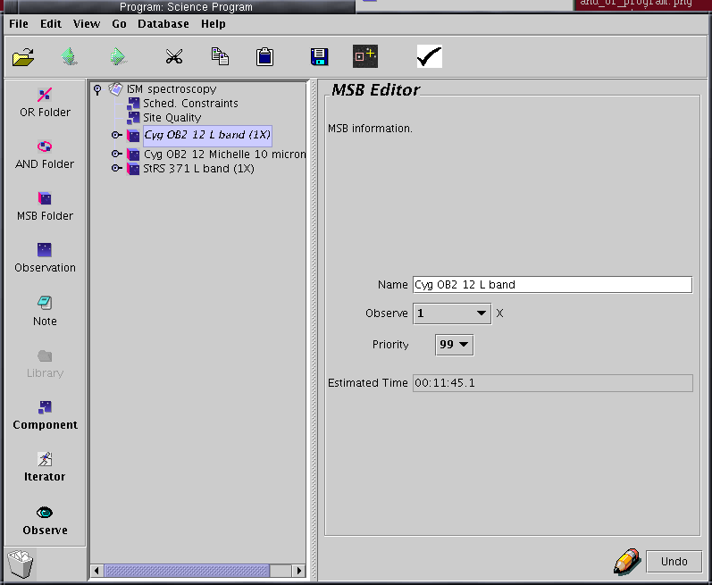
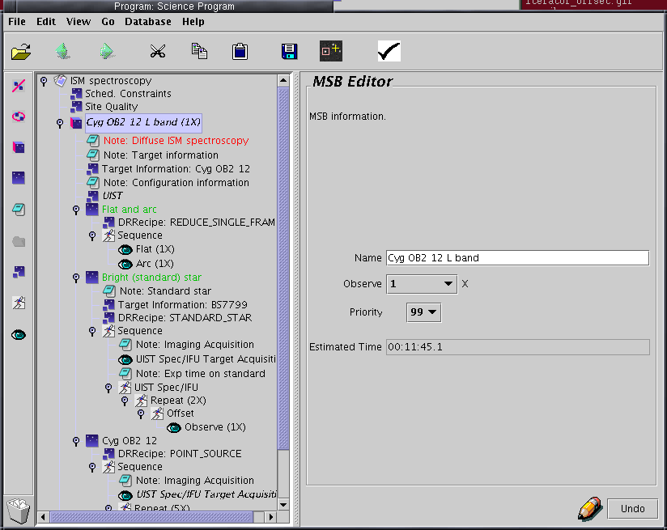
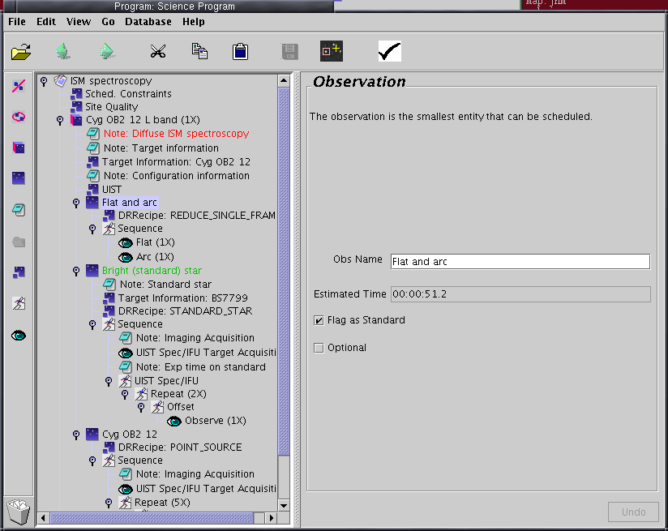
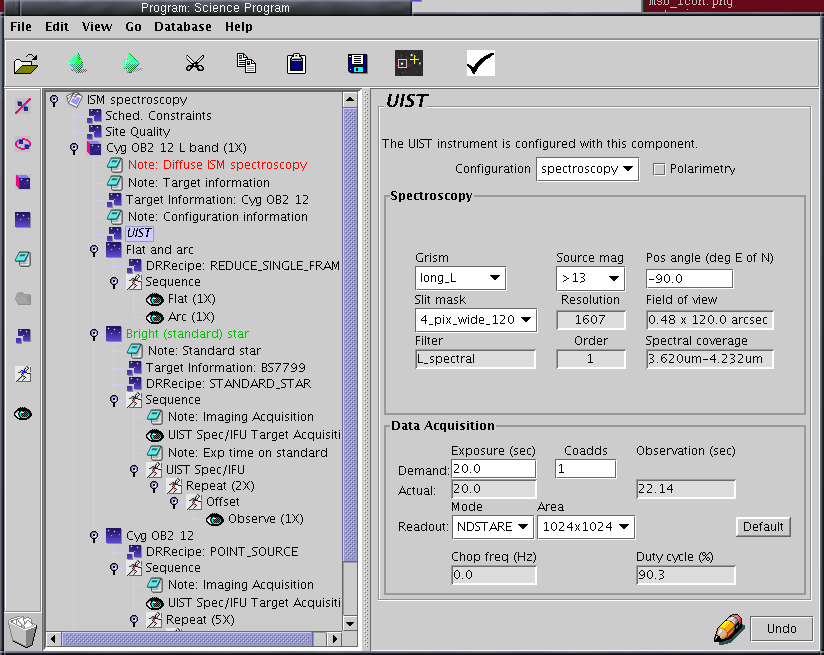
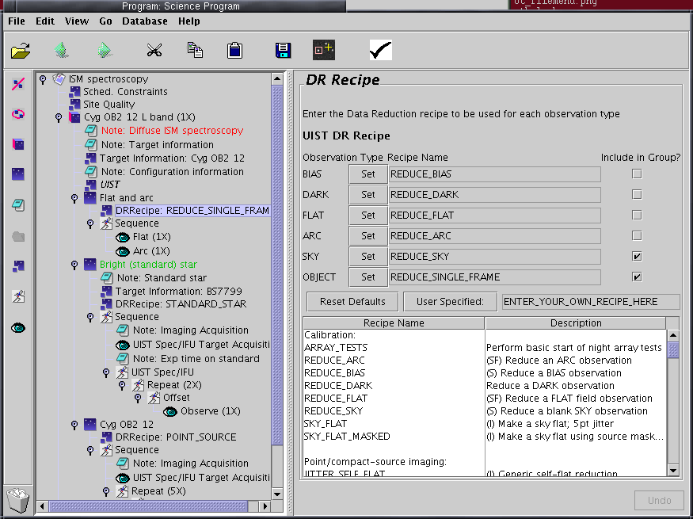
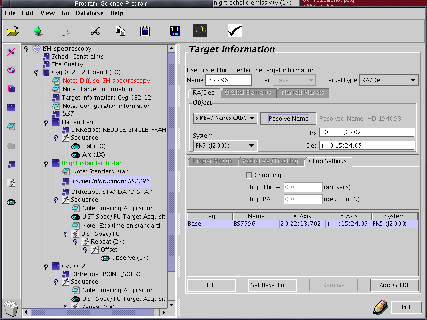
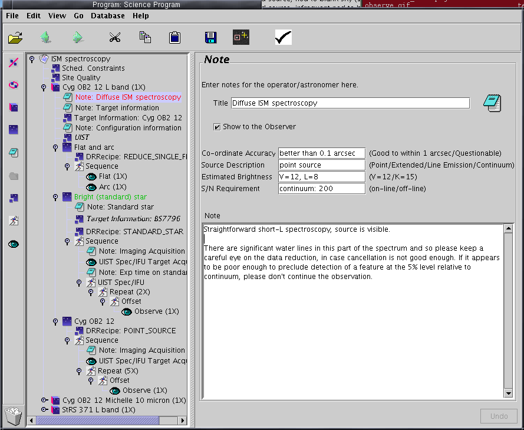

| SCIENCE PROGRAM WINDOW - Details | |
 |
|
| [Left] Program display
window - shows the program structure, initially all the MSBs are "compact".
One is highlighted, hence the right hand panel. |
[Right] MSB administrative
information - enter an informative name for the whole MSB, select the
number of times it should be repeated, assign a priority. Note the time
calculation at the MSB level. |
 Note - to make space, the View menu has been used to remove the text descriptions from component buttons on the lefthand toolbar. |
|
| [Left] Program display
window - shows the program structure, here with the first MSB expanded (and
within it, Observations expanded also). This
particular MSB contains Observations of Flat/Arc, Standard Star and a
Target. |
[Right] MSB administrative
information - enter an informative name for the whole MSB,
select the number of times it should be repeated, assign a priority
within your program. Note the time calculation at the MSB level. |
 |
|
| [Left] Program display
window - with a Flat/Arc Observation
expanded. The "Flag as
Standard" tick box is ticked; this usage
means that the observations resulting from this Observation will be
considered
sharable calibrations by the OMP database. |
[Right] Observation
administrative information - in cases like flat/arc, the
observation name in the library is generally good enough. For
observations of a target, replace this with the name of the target
(this is what appears in the QT at the summit). Note that individual Observations
in an MSB can
be flagged as Optional - as in this case (because the observer may
decide that a flat and arc has been done recently enough). |
 |
|
| [Left] - Program display
window
- with a global UIST component highlighted. This component
will apply to all Observations within the MSB which do not
override it - either with their
own UIST component, or a UIST iterator. |
[Right] - Contents of the
UIST
component - these settings apply to every Observe done within the
MSB
unless overridden as above. |
 |
|
| [Left] - Program display window - with the DRRecipe component of a
Flat/Arc
Observation highlighted. |
[Right] - Contents of the
DRRecipe
component - If starting from the library you will probably not
need
to alter these settings. If you do wish to change (for example) the
recipe which applies to all "OBJECT" Observes, select the recipe
name you
need in the list at the bottom, then click "Set" next to the "OBJECT"
entry
in the list at the top. |
 |
|
| [Left] - Program display
window
- with the Target Component of an Observation titled "Standard Star"
highlighted. |
[Right] - The Target
information
for the standard star - the OT can resolve names using one of a
number
of available name resolution servers; the target coordinates in this
example
were obtained by simply typing "BS7796" into the "Name" box, then
clicking
"Resolve Name". Clicking "Plot" after getting the coordinates correct
will
pop up the "Position Editor", which is detailed more fully in the main
document. Note: Be careful when resolving coordinates for complex, extended objects such as galaxies, for which the optical, radio and infrared positions can be very different. Note: you can enter the name of a planet (the UKIRT TCS will go to the appropriate position, generated from orbital elements). To do this, select "named planets" from the Target Type pulldown menu (on the right). This will pop the planets tab to the front; this bears a pull-down menu of planets. (The rather odd interface here - using a menu to switch tabs - is intentional; it avoids mixing of planet names and RA/Dec coordinates.) |
 |
|
| [Left] - Program display window - with a Note applying to an
entire MSB
highlighted. |
[Right] - Contents of the
Note
- Use Notes to document your program's MSBs as thoroughly as you can.
See
the main document for more discussion of program documentation and note
components. |